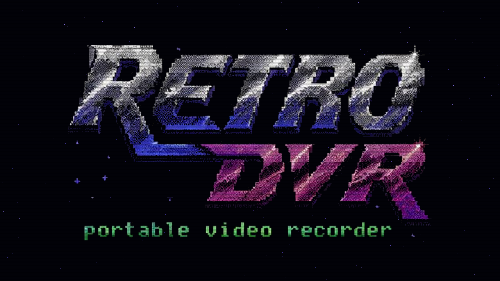

📼 RETRO DVR
A lo-fi, DIY field recorder for old camcorders.
Hi8 → HDMI → Raspberry Pi → 1080p H.264 on a USB stick. A pocket Atomos for tapes.


A lo-fi, DIY field recorder for old camcorders.
Hi8 → HDMI → Raspberry Pi → 1080p H.264 on a USB stick. A pocket Atomos for tapes.
A 800×480 touchscreen, a live preview that's always on, and one big red button. Plug in a tape deck, hit record, pull the power when you're done.


Full 1080p hardware H.264 compression — the Pi's GPU does the heavy lifting, keeping the CPU cool and efficient.
Tkinter UI rendered directly on top of the GPU preview via X11 XID targeting. No compositor overhead, no latency.
Capture single frames, use adjustable onion skinning overlays, loop previews, and compile directly to MP4 natively on-device.
Records exclusively to USB storage with a safe-eject system. It never touches the primary SD card, preserving the OS.
Review old clips directly on the screen, drop scene markers while recording, and auto-split long continuous takes.
The root filesystem is completely read-only. Just yank the power cord when you're done — zero risk of corruption.
1. Grab the latest rolling image
2. Flash with Raspberry Pi Imager → Use custom image
3. Wire it up like this:
4. Power on. First boot self-provisions and reboots once; after that you're live.
| SBC | Raspberry Pi 2B / 3B (32-bit architecture) |
| Capture | HDMI→CSI-2 C790 — Toshiba TC358743 |
| Display | iPistBit DSI 800×480 capacitive touch |
| Storage | Any standard USB drive (records as MP4) |